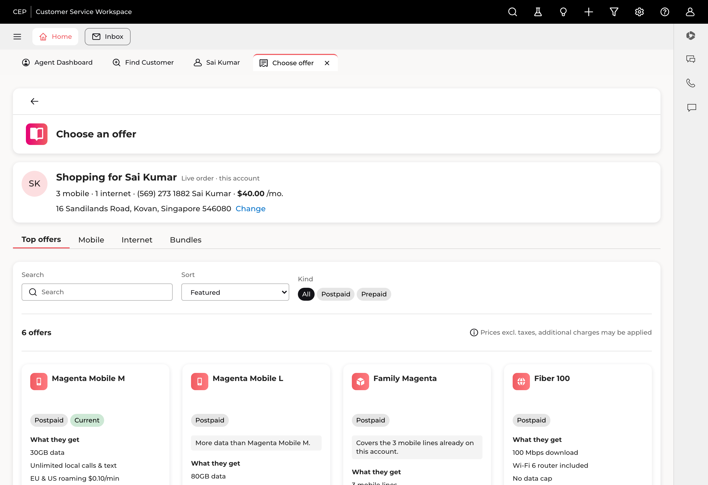
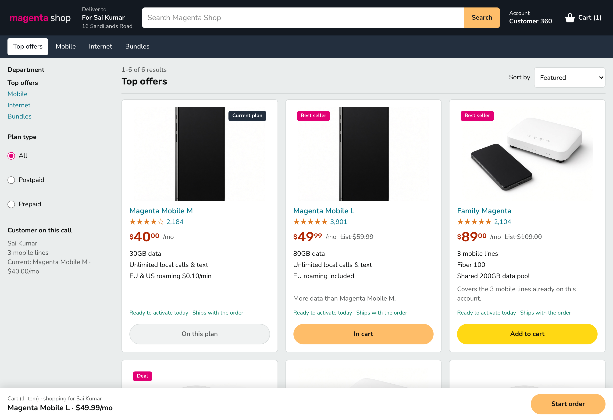

Run 02 · Stage 04 · the build
Two builds,
one brief.
The spec produced /catalog-v2 — the catalog rebuilt as an agent's tool, inside the
Telekom design system. Then came a second ask: do it again, off the design system, the way a
competitor would. That became /catalog-studio, and it took three attempts.
Both are live. Neither one touched /catalog. Three catalogs now exist side by side —
which is the whole point of the Comparison tab.
Build 1 · inside the design system · zero new tokens
/catalog-v2 — every control on it is real

- ✓The customer is on the screen. Name, initials, the real address, mobile and internet counts, the
$40.00line — no tab flip. - ✓Search filters the grid as you type, across titles and body copy.
- ✓The count is the truth. “6 offers”, not “100 Results” — and it follows every filter.
- ✓Twelve named offers at real prices: Magenta Mobile S/M/L, Fiber 100/500, TV Plus, bundles, prepaid packs. No lorem, no
$18.99. - ✓The current plan is a card, chipped Current, its action disabled — Sai's
$40.00Magenta Mobile M. - ✓Details opens a panel and the grid stays put. Select still starts the existing
/offerwizard. - ✓Two offers state a reason for being on screen — the Uxcel line, in our words: “Covers the 3 mobile lines already on this account.”
Build 2 · the second ask, in the user's own words
“not conected to the design system”
New route /catalog-studio, isolated CSS, its own fonts, zero CEP tokens. The same
lib/catalog-v2.ts data underneath — so any difference you can see is a
design difference, not a data one.
The honest version of “off the design system”
It took three attempts, and two of them were rejected
Both rejections were the same correction: the design was answering “is this attractive?” when the question was “does this look like a shop an agent can sell from?” Taste feedback got specific the moment there was something running to point at.
Build 2 · outside the design system · its own everything
/catalog-studio — an actual marketplace

- ✓Marketplace chrome — “Deliver to · For Sai Kumar · 16 Sandilands Road” in the header, the Amazon placement from reference 04, doing a real job.
- ✓Department nav + filter rail — categories twice over, plan-type radios, and the customer's current plan restated in the sidebar.
- ✓Products, not tiles — generated product photography, star ratings with review counts,
$4999 price treatment, struck-through list prices, “Best seller” and “Deal” flags. - ✓A cart, not a Select — Add to cart, an “In cart” state, and a sticky bar that names who you're shopping for before Start order.
- ✓Current plan still can't be bought — it renders as On this plan. The one thing every build kept.
- ✓Sort by Featured / price / name, and a real no-results state with a way out.
- ✓Completely isolated —
[data-studio]scoping, its own CSS variables, and CEP's viewport zoom explicitly switched off.
Two new screens, one old screen that must not move
How we know nothing broke
npx tsc --noEmit clean node scripts/flow-test.mjs http://localhost:3001 111 PASS · 0 FAIL ├─ v1 still shows 100 Results on Top offers the lie is preserved on purpose ├─ v1 still shows the Seattle address untouched ├─ Mobile tab still filters to 4 Results pre-existing assertion ├─ Add new → /catalog-v2, strip names Sai Kumar ├─ v2 search changes the count · nonsense → no-results ├─ v2 Details opens a panel · Select → /offer ├─ v2 current plan control is disabled └─ studio names the customer · On this plan · Start order → /offer
The most valuable assertions in the file are the ones that check the old screen still lies to
you. “100 Results” staying wrong on /catalog is proof the redesign lived in a sibling
route instead of leaking into a pixel-verified screen.